Contrôle des processus
التحكم في العمليات
الشرح بالعربية
العملية برنامج قيد التنفيذ. تتنفذ في المقدمة foreground (ينتظرها shell) أو الخلفية background بـ & مع رقم [n]. Ctrl+Z يعلّق، bg يواصل في الخلفية، fg يعيد للمقدمة، Ctrl+C يوقف، wait ينتظر الأبناء. ps -f يعرض UID PID PPID STIME TIME CMD، وSTAT: R تعمل، S نائمة، T موقوفة، Z زومبي. kill PID يرسل إشارة؛ kill -9 إجبار SIGKILL، و-15 SIGTERM، و-1 SIGHUP، و-2 SIGINT. عند خروج الأب تُقتل أبناؤه.
Illustrations de la leçon
16 planches · cliquez pour agrandir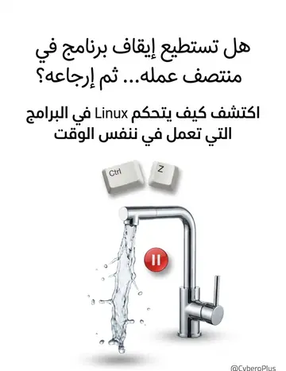
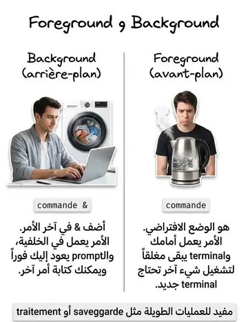
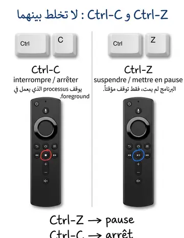
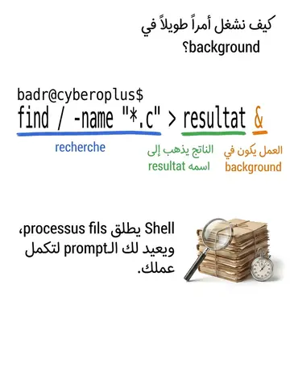
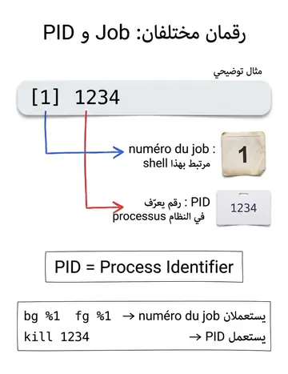
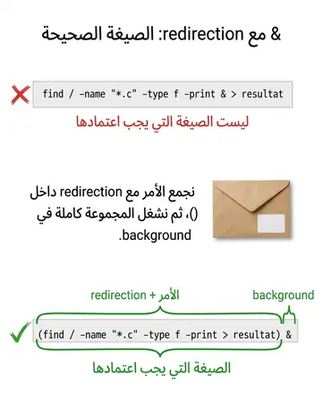
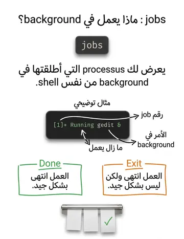
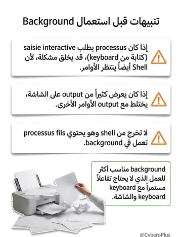
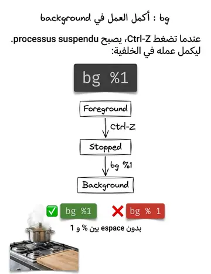
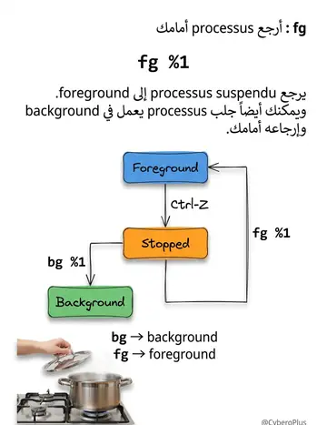
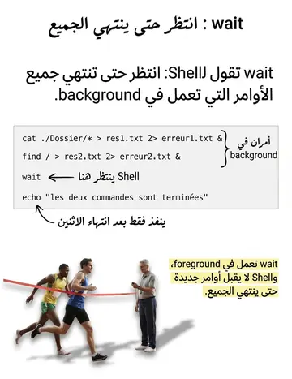
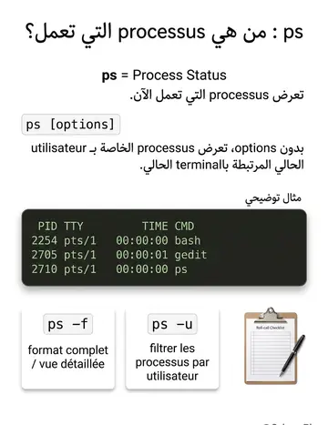
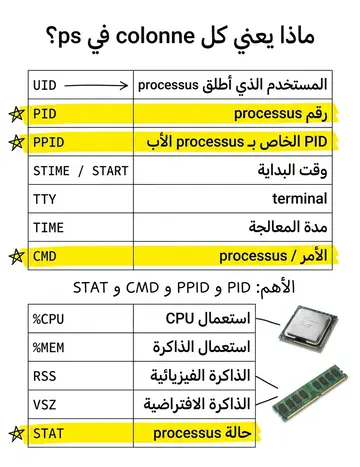
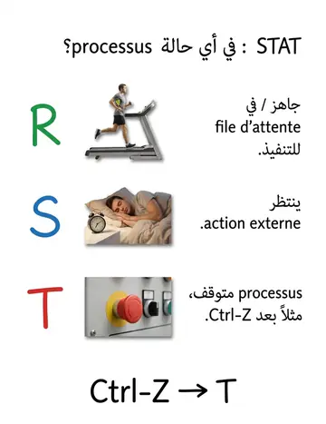
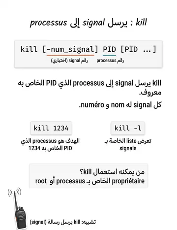
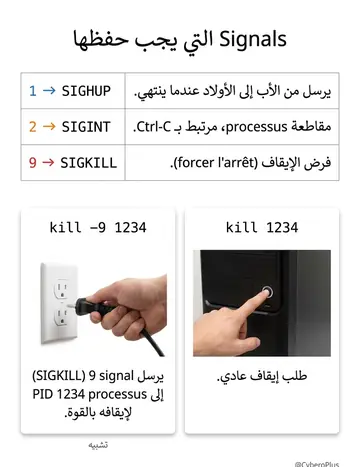
Contenu de la leçon
Le cours en français, avec les termes techniques et les exemples.
CONTRÔLE DES
PROCESSUS
Le shell permet de contrôler les processus qui s’exécutent. Un processus s’exécute soit en foreground (avant plan), soit en background (arrière plan ou en tâche de fond).
Foreground (Avant-plan) : Exécution par défaut.
Lorsqu'une commande est lancée, elle s'exécute automatiquement en avant-plan.
Bloque l'accès au terminal jusqu'à la fin de la commande. Empêche l'utilisateur de lancer une autre commande dans le même terminal tant que l'exécution n'est pas terminée.
Pendant l'exécution de cette commande :
L’utilisateur ne peut pas saisir une autre commande dans ce même shell.
Pour lancer une nouvelle commande en parallèle, l’ouverture d’un nouveau terminal est nécessaire.
Remarque : Ouvrir un nouveau terminal revient à créer un nouveau processus shell, permettant d'exécuter des commandes séparément.
CONTRÔLE DES PROCESSUS
Suspension d’un processus en avant-plan :
Utiliser Ctrl-Z pour suspendre un processus en cours.
Attention : Le processus est en pause, mais reste actif en arrière-plan.
Relancer un processus suspendu :
En avant-plan : Utiliser la commande fg.
En arrière-plan : Utiliser la commande bg.
Interruption d’un processus en avant-plan :
Utiliser Ctrl-C pour arrêter définitivement un processus en cours.
CONTRÔLE DES PROCESSUS : EXÉCUTION
EN AVANT-PLAN
Exécution en arrière-plan
Pour permettre au shell de lancer plusieurs commandes en parallèle, il est nécessaire d'exécuter une commande en arrière-plan.
Cela se fait en ajoutant le symbole & à la fin de la commande.
Lorsqu'une commande est suivie de &, le shell crée un processus fils pour exécuter cette commande en arrière-plan.
Le processus shell (processus père) peut alors continuer à exécuter d'autres commandes sans attendre la fin de l'exécution de la commande précédente.
CONTRÔLE DES PROCESSUS : EXÉCUTION
EN ARRIÈRE-PLAN
Lorsque la commande est lancée en arrière plan, le shell:
Affiche entre crochets, « [ num_processus] », le numéro du processus lancé en arrière plan, par le même processus shell.
Affiche le PID (Process IDentifier), le numéro identifiant le processus lancé en arrière plan.
Ensuite, affiche le prompt (l’invite de commande) et attend une nouvelle commande.
Exemple :
Pour rechercher tous les fichiers avec l'extension *.c à partir du répertoire racine / et enregistrer les résultats dans le fichier resultat, la commande serait :
find / -name "*.c" > resultat &Cette commande démarre une recherche en arrière-plan, permettant à l'utilisateur de continuer à travailler sur le terminal pendant que la recherche s'effectue.
CONTRÔLE DES PROCESSUS : EXÉCUTION
EN ARRIÈRE-PLAN
Exemple :
find / -name "*.c" -type f -print & > resultat& : find doit être exécutée en arrière-plan. > : Redirige la sortie standard d'une commande vers un fichier.
Dans cette syntaxe, le shell essaie d'exécuter find en arrière-plan, mais la redirection (> resultat) est associée à la commande qui précède le &, ce qui pourrait ne pas fonctionner comme prévu.
En effet, cette syntaxe tente d'exécuter find en arrière-plan tout en redirigeant la sortie dans resultat, mais la redirection pourrait ne pas être appliquée à la commande en arrière-plan.
Le shell va traiter la redirection avant de lancer la commande en arrière-plan. La sortie standard de la commande find ne sera pas correctement redirigée vers resultat. En fait, la redirection pourrait échouer, et resultat pourrait rester vide.
(find / -name "*.c" -type f -print > resultat) &
Conclusion : les parenthèses permet de s'assurer que la redirection est correctement appliquée à la commande find avant qu'elle ne soit exécutée en arrière-plan.
CONTRÔLE DES PROCESSUS
La commande fg permet de relancer le processus en avant plan.
On ne peut pas arrêter (interrompre) un processus en arrière plan avec « CTRL-C » .
La commande jobs permet de lister les processus lancés en arrière plan, par le même processus shell.
Exemple:
% jobs[1]+ Running gedit &
Veut dire que le processus « gedit » est lancé en arrière plan.
CONTRÔLE DES PROCESSUS
Si l’exécution en arrière plan, s’est bien passée, une ligne « Done » apparait indiquant que le processus est terminé.
Exemple:
[1] + Done find / -name "*.c" -type f > resultat
Si l’exécution en arrière plan, ne s’est pas bien passée, une ligne « Exit »
apparait indiquant que le processus est terminé.
Exemple:
[1] + Exit find / -name "*.c" -type f > resultat
CONTRÔLE DES PROCESSUS
Précaution:
Si le processus lancé en arrière plan fait des saisies interactives alors le shell peut interpréter ces saisis comme de nouvelles commandes.
éviter les saisies interactives dans les processus lancés en arrière plan.
Si le processus lancé en arrière plan fait des affichages sur écran alors ces affichages peuvent se chevaucher avec les sorties standard des nouvelles commandes lancées avec le shell.
éviter les sorties standards dans les processus lancés en arrière plan.
CONTRÔLE DES PROCESSUS
Attention:
Un processus ne peut exister que si son père existe.
Quand on quitte le processus père alors on quitte automatiquement tous ses processus fils.
Ne pas quitter le shell alors que ses processus fils s’exécutent en arrière plan.
CONTRÔLE DES PROCESSUS
La commande « bg » permet de réactiver un processus bloqué par « CTRL-Z ». L’exécution du processus réactivé s’effectue en arrière plan.
bg %num_process« num_process » désigne le numéro du processus lancé en arrière plan.
pas d’espace entre % et « num_process ».
CONTRÔLE DES PROCESSUS
Exemple :
On lance en avant-plan la commande « find ». Pendant l’exécution, on tape la commande «Ctrl-Z»
pour suspendre l’exécution du processus.
% find / > resultatLorsqu’on tape « Ctrl-Z », la commande « find » est suspendu , le message suivant est affiché.
[1] + Stopped find / > resultat
On peut réactiver le processus et relancer, en arrière plan, la suite de la commande « find » en utilisant la commande «bg».
% bg %1[1] 1234 find / > resultat &
CONTRÔLE DES PROCESSUS
La commande « fg » permet :
de réactiver un processus suspendu par « CTRL-Z » . L’exécution du processus réactivé s’effectue en avant plan.
de refaire passer en avant plan une commande qui s’exécute en arrière plan (commande lancée avec le symbole « & »).
fg %num_process« num_process » désigne le numéro du processus lancé en arrière plan ou suspendu par « Ctrl-Z ».
Pas d’espace entre % et « num_process »
CONTRÔLE DES PROCESSUS
Exemple :
On lance en avant plan la commande « find ». Pendant l’exécution, on tape la commande
«Ctrl-Z» pour suspendre l’exécution du processus.
% find / > resultatLorsqu’on tape « Ctrl-Z », la commande « find » est suspendu , le message suivant est affiché.
[1] + Stopped find / > resultat
On peut réactiver le processus et relancer, en avant plan, la suite de la commande « find »
en utilisant la commande «fg».
% fg %1find / > resultatCONTRÔLE DES PROCESSUS
La commande « wait » permet de faire attendre que tous les processus lancés en arrière plan soient terminés.
Exemple:
% cat ./Dossier/* > res1.txt 2> erreur1.txt &% find / > res2.txt 2> erreur2.txt &% wait% echo " les deux commandes sont terminées"La commande « wait » est lancée en avant plan. On ne peut plus lancer de nouvelles commandes, tant que les commandes lancées en arrière plan n’ont pas terminé.
CONTRÔLE DES PROCESSUS : COMMANDE
WAIT
La commande ps (Process Status) permet de lister les processus qui sont en cours sur la machine.
ps [options]La commande « ps » sans options, n’affiche que les processus en cours qui sont lancés par l’utilisateur sur le terminal actuel (par le processus shell).
Exemple:
%psPID
TTY
TIME
CMD
2254 pts/1
00:00:00 bash
2705 pts/1
00:00:01 gedit
2710 pts/1
00:00:00
psCONTRÔLE DES PROCESSUS :
COMMANDE PS
% ps –f(format complet) affiche une vue détaillée des processus
% ps –upermet de filtrer les processus par utilisateur
CONTRÔLE DES PROCESSUS
UID (User ID): identifiant de l’utilisateur qui a lancé le processus.
PID (Process ID): correspond au numéro du processus
PPID (Parent Process ID): correspond au PID du processus parent.
STIME (Start TIME): correspond à l’heure du lancement du processus.
START: idem STIME.
TTY : correspond au nom du terminal depuis lequel le processus a été lancé.
TIME : correspond à la durée de traitement du processus.
CMD : correspond au nom du processus (la Commande exécutée).
%CPU: facteur d’utilisation du cpu exprimé en %.
C: idem %CPU
CONTRÔLE DES PROCESSUS : SIGNIFICATION
DES DIFFÉRENTES COLONNES
%MEM : rapport d’utilisation de la mémoire
RSS: mémoire physique (non virtuelle) utilisée par la processus, exprimée en kilo-octets .
VSZ : mémoire virtuelle.
STAT: état du processus
Quelques états:
R (Running): prêt à être exécuté (il est sur la file d’attente des processus).
S (Sleeping): bloqué en attente d’une action externe (par exemple le processus attend une lecture sur la clavier).
T : processus arrêté, par exemple par Ctrl-Z.
CONTRÔLE DES PROCESSUS
Pour arrêter un processus qui s’exécute en arrière plan, on utilise la commande « kill » qui consiste à envoyer des signaux au processus.
Le signal est un moyen de communication entre les processus.
kill [-num_signal] PID [PID ...]
Le principe de la commande consiste à envoyer un signal (une requête) au processus spécifié dans la commande par son PID.
Ce dernier intercepte le message et réagit en fonction du signal envoyé.
CONTRÔLE DES PROCESSUS : ARRÊT D'UN
PROCESSUS / SIGNAL
Remarque:
Seul le propriétaire du processus qui peut lancer la commande «kill » ou le super-user (utilisateur "root") .
Chaque signal a un nom et un numéro qui dépendent du système utilisé. La commande
« kill -l » permet d’obtenir la liste des signaux.
Par défaut, la commande « kill » envoie le signal demandant au processus spécifié de se terminer normalement.
Exemple :
% gedit test.c &[1] 1234
% kill 1234[1] + Terminated gedit test.c
CONTRÔLE DES PROCESSUS : ARRÊT D'UN
PROCESSUS / SIGNAL
Le signale numéro 1 (SIGHUP): Ce signal est envoyé par le père à tous ses fils lorsqu'il se termine.
Le signal numéro 2 (SIGINT): ce signal permet l’interruption du processus demandé (Ctrl+C).
Le signal 9 (SIGKILL): ce signal permet de forcer l’arrêt du processus.
Exemple:
% gedit test.c &[1] 1234
% kill -9 1234[1] + Processus arrêté gedit test.c